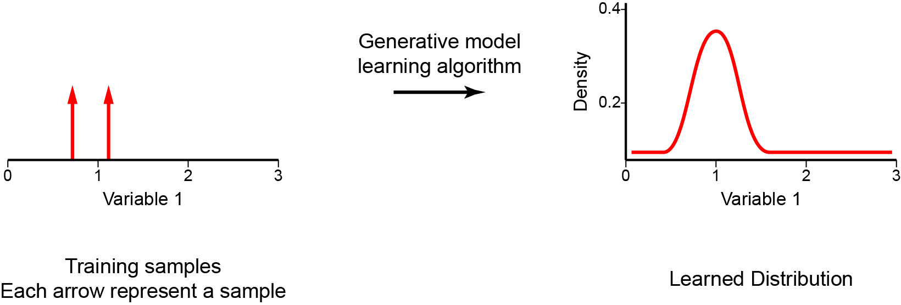
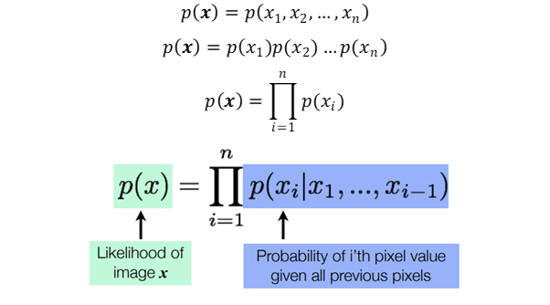
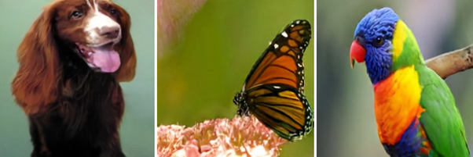
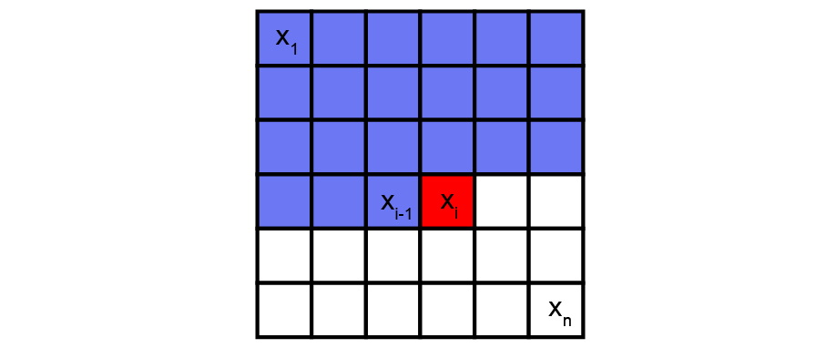
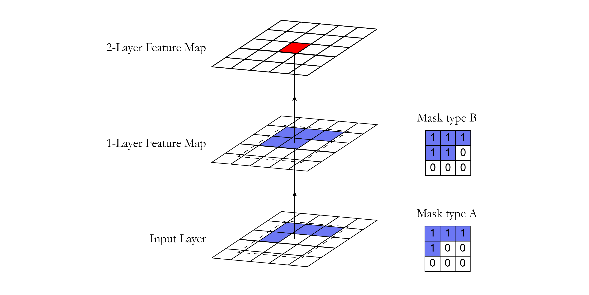
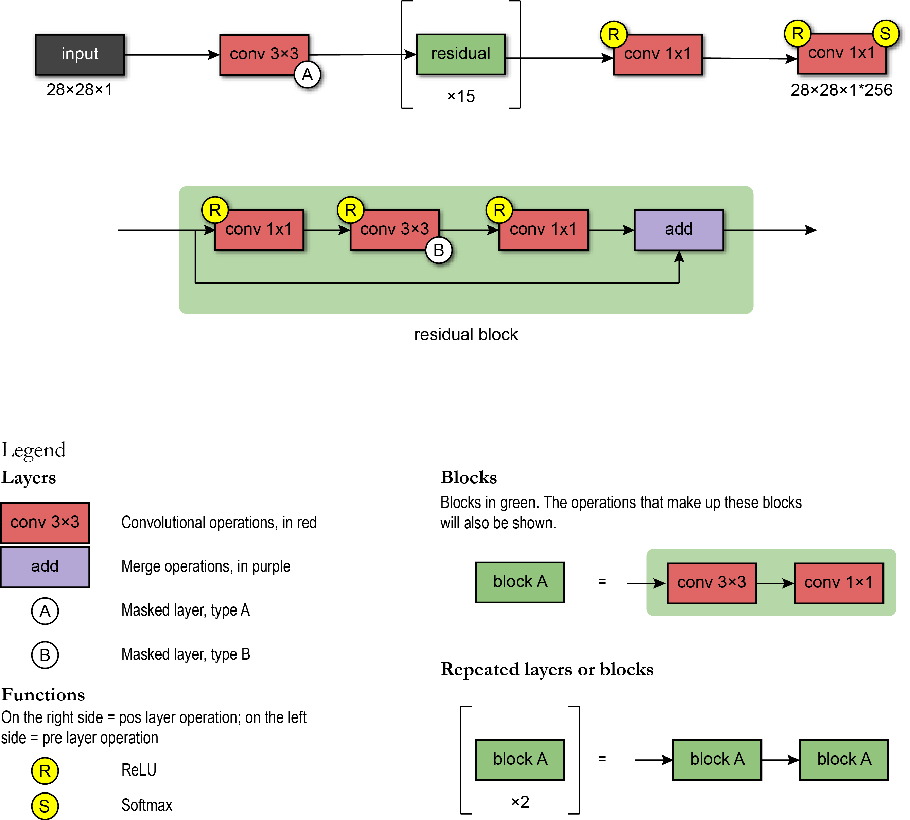
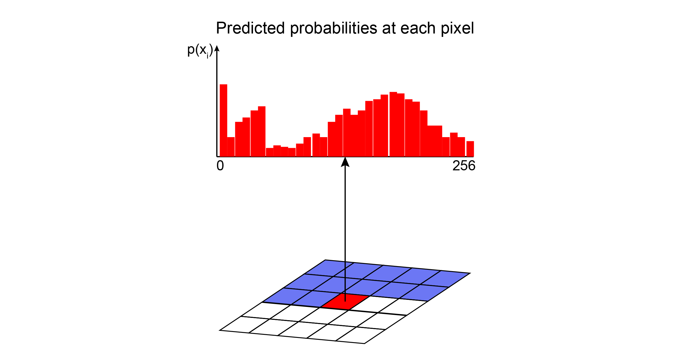
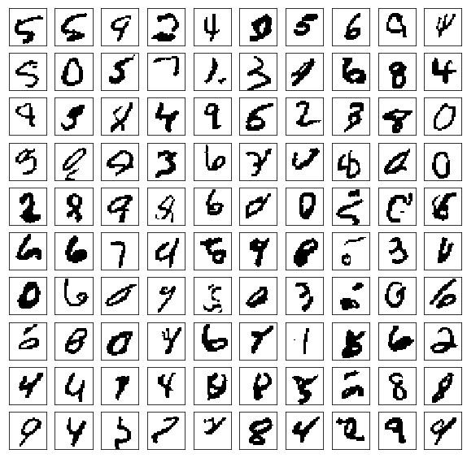
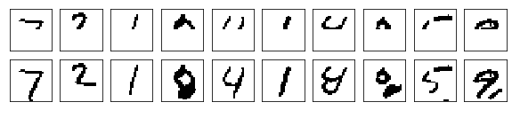
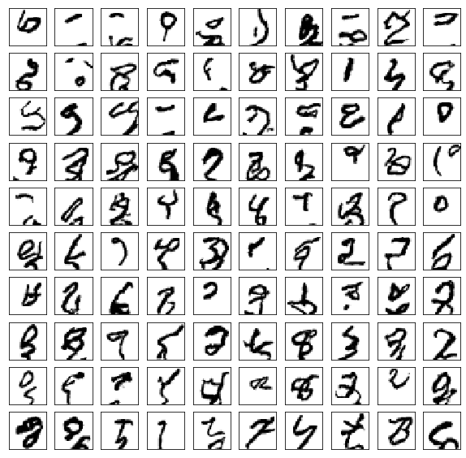

Autoregressive Models — PixelCNN
Creating digits with deep generative models!
This post is presented in towardsdatascience.com.
Hi everybody! This is our first post of a series about modern autoregressive models. Here are the topics we are going to cover in this series:
Summary
- Autoregressive models — PixelCNN
- Modelling coloured images
- PixelCNN’s blind spot in the receptive field
- Fixing the blind spot — Gated PixelCNN
- Conditional generation with Gated PixelCNN
- Gated PixelCNN with cropped convolutions
- Improving performance — PixelCNN++
- Improving sampling time — Fast PixelCNN++
- Using attention mechanisms — PixelSNAIL
- Generating Diverse High-Fidelity Images — VQ-VAE 2
The implementation for each one of these topics can be found in this repository.
Let’s start!
Introduction
Generative models are an important class of models from unsupervised learning that have been receiving a lot of attention in these last few years. These can be defined as a class of models whose goal is to learn how to generate new samples that appear to be from the same dataset as the training data. During the training phase, a generative model tries to solve the core task of density estimation. In density estimation, our model learns to construct an estimate — pmodel(x) — as similar as possible to the unobservable probability density function — pdata(x). It is important to mention that the generative model should be able to make up new samples from the distribution, and not just copy and paste existing ones. Once we have successfully trained our model, it can be used for a wide variety of applications that range from forms of reconstruction such as image inpainting, colourization, and super-resolution, to the generation of artwork.

There are a few different approaches that we can use to perform this probability density estimation, such as:
- Generative Adversarial Networks (GANs) use an approach where the model performs an implicit density estimation. In this case, we train a model that can create samples from pmodel(x) without explicitly defining pmodel(x); the model learns a stochastic procedure that generates data but does not provide knowledge of the probability of observations or specify a conditional log-likelihood function;
- Variational autoencoders (VAE) use an explicit density estimation but define an intractable density function with latent variables that cannot be optimized directly. So, to train the model, we derive and optimize the lower bound of likelihood instead (approximate density); we optimize the log-likelihood of the data by maximizing the evidence lower bound (ELBO) (more details can be found here and here);
- Autoregressive (AR) models create an explicit density model that is tractable to maximize the likelihood of training data (tractable density). For this reason, with these methods, it is easy to compute the likelihood of data observation and to get an evaluation metric of the generative model.
As we mentioned, the autoregressive is one practical approach that provides an explicit modelling of the likelihood function. However, to model data with several dimensions/features, autoregressive models need to impose some conditions. First, the input-space X needs to have a determining ordering for its features. That is why autoregressive models are normally used for time series that have an intrinsic sequence of time steps. However, they can be employed for images by defining, for example, that the pixels on the left come before the ones on the right, and the ones on top before the ones on the bottom. Second, to tractably model the joint distribution of the features in a data observation (p(x)), the autoregressive approach casts p(x) as a product of conditional distributions.
Autoregressive models define the joint distribution using conditionals over each feature, given the values of the previous features. For example, the probability of a pixel from an image to have a specific intensity value is conditioned by the values of all previous pixels; and the probability of an image (the joint distribution of all pixels) is the combination of the probability of all its pixels. Therefore, autoregressive models use the chain rule to decompose the likelihood of the data sample x into a product of 1-dimensional distributions (equations below). The factorization turns the joint modelling problem into a sequence problem, where one learns to predict the next pixel given all the previously generated pixels.

These conditions (i.e. determining ordering and product of conditional distribution) are what mainly defines an autoregressive model.
Now, the big challenge is to calculate these conditional likelihoods $p(x_{i}| x_{1}, …, x_{i-1})$. How can we define these complex distributions in an expressive model that is also tractable and scalable? One solution is to use universal approximators, like deep neural networks.
PixelCNN
DeepMind introduced PixelCNN in 2016 (Oord et al., 2016), and this model started one of the most promising families of autoregressive generative models. Since then it has been used to generate speech, videos, and high-resolution pictures.

PixelCNN is a deep neural network that captures the distribution of dependencies between pixels in its parameters. It sequentially generates one pixel at a time in an image along the two spatial dimensions.

Using convolution operations, PixelCNN can parallelly learn the distribution of all pixels in the image. However, when determining the probability of a specific pixel, the receptive field of a standard convolutional layer violates the sequential prediction of autoregressive models. When processing the information of a central pixel, the convolutional filter considers all the pixels around it to calculate the output feature map, not only the previous pixels. Masks are then adopted to block information flow from pixels not yet predicted.
Masked convolutional layers
Masking can be done by zeroing out all the pixels that should not be considered. In our implementation, a mask with the same size of the convolutional filter with values 1 and 0 was created. This mask was multiplied with the weight tensor before doing the convolution operation. In the PixelCNN, there are two types of masks:
- Mask type A: this mask is applied only to the first convolutional layer. It restricts access to the pixel of interest by zeroing the central pixel in the mask. This way, we guarantee that the model will not access the pixel that it is about to predict (in red in the figure below).
- Mask type B: This mask is applied to all the subsequent convolutional layers and relaxes the restrictions of mask A by allowing the connection from a pixel to itself. This is important in order to account for the pixel prediction of the first layer.

Here we present a snippet showing the implementation of the mask using the Tensorflow 2.0 framework.
class MaskedConv2D(keras.layers.Layer):
"""Convolutional layers with masks.
Convolutional layers with simple implementation of masks type A and B for
autoregressive models.
Arguments:
mask_type: one of `"A"` or `"B".`
filters: Integer, the dimensionality of the output space
(i.e. the number of output filters in the convolution).
kernel_size: An integer or tuple/list of 2 integers, specifying the
height and width of the 2D convolution window.
Can be a single integer to specify the same value for
all spatial dimensions.
strides: An integer or tuple/list of 2 integers,
specifying the strides of the convolution along the height and width.
Can be a single integer to specify the same value for
all spatial dimensions.
Specifying any stride value != 1 is incompatible with specifying
any `dilation_rate` value != 1.
padding: one of `"valid"` or `"same"` (case-insensitive).
kernel_initializer: Initializer for the `kernel` weights matrix.
bias_initializer: Initializer for the bias vector.
"""
def __init__(self,
mask_type,
filters,
kernel_size,
strides=1,
padding='same',
kernel_initializer='glorot_uniform',
bias_initializer='zeros'):
super(MaskedConv2D, self).__init__()
assert mask_type in {'A', 'B'}
self.mask_type = mask_type
self.filters = filters
self.kernel_size = kernel_size
self.strides = strides
self.padding = padding.upper()
self.kernel_initializer = initializers.get(kernel_initializer)
self.bias_initializer = initializers.get(bias_initializer)
def build(self, input_shape):
self.kernel = self.add_weight('kernel',
shape=(self.kernel_size,
self.kernel_size,
int(input_shape[-1]),
self.filters),
initializer=self.kernel_initializer,
trainable=True)
self.bias = self.add_weight('bias',
shape=(self.filters,),
initializer=self.bias_initializer,
trainable=True)
center = self.kernel_size // 2
mask = np.ones(self.kernel.shape, dtype=np.float32)
mask[center, center + (self.mask_type == 'B'):, :, :] = 0.
mask[center + 1:, :, :, :] = 0.
self.mask = tf.constant(mask, dtype=tf.float32, name='mask')
def call(self, input):
masked_kernel = tf.math.multiply(self.mask, self.kernel)
x = nn.conv2d(input,
masked_kernel,
strides=[1, self.strides, self.strides, 1],
padding=self.padding)
x = nn.bias_add(x, self.bias)
return x
Architecture
In Oord et al. 2016, the PixelCNN uses the following architecture: the first layer is a masked convolution (type A) with 7x7 filters. Then, 15 residuals blocks were used. Each block processes the data with a combination of 3x3 convolutional layers with mask type B and standard 1x1 convolutional layers. Between each convolutional layer, there is a non-linearity ReLU. Finally, the residual blocks also include a residual connection.

After the sequence of the blocks, the network has a chain of RELU-CONV-RELU-CONV layers using standard convolutional layers with 1x1 filters. Then, the output layer is a softmax layer which predicts the value among all possible values of a pixel. The output of the model has the same spatial format as the input image (because we want an output value for each pixel) times the number of possible values (for example, 256 intensity levels). Here we present a snippet showing the implementation of the network architecture using the Tensorflow 2.0 framework.
class ResidualBlock(keras.Model):
"""Residual blocks that compose pixelCNN
Blocks of layers with 3 convolutional layers and one residual connection.
Based on Figure 5 from [1] where h indicates number of filters.
Refs:
[1] - Oord, A. V. D., Kalchbrenner, N., & Kavukcuoglu, K. (2016). Pixel
recurrent neural networks. arXiv preprint arXiv:1601.06759.
"""
def __init__(self, h):
super(ResidualBlock, self).__init__(name='')
self.conv2a = keras.layers.Conv2D(filters=h, kernel_size=1, strides=1)
self.conv2b = MaskedConv2D(mask_type='B', filters=h, kernel_size=3, strides=1)
self.conv2c = keras.layers.Conv2D(filters=2 * h, kernel_size=1, strides=1)
def call(self, input_tensor):
x = nn.relu(input_tensor)
x = self.conv2a(x)
x = nn.relu(x)
x = self.conv2b(x)
x = nn.relu(x)
x = self.conv2c(x)
x += input_tensor
return x
# Create PixelCNN model
inputs = keras.layers.Input(shape=(height, width, n_channel))
x = MaskedConv2D(mask_type='A', filters=128, kernel_size=7, strides=1)(inputs)
for i in range(15):
x = ResidualBlock(h=64)(x)
x = keras.layers.Activation(activation='relu')(x)
x = keras.layers.Conv2D(filters=128, kernel_size=1, strides=1)(x)
x = keras.layers.Activation(activation='relu')(x)
x = keras.layers.Conv2D(filters=128, kernel_size=1, strides=1)(x)
x = keras.layers.Conv2D(filters=q_levels, kernel_size=1, strides=1)(x)
pixelcnn = keras.Model(inputs=inputs, outputs=x)
Preprocessing
The input values of the PixelCNN were scaled to be in the range of [0, 1]. During this preprocessing, it was possible to quantize the values of the pixels in a lower number of intensity levels. In our implementation, we first present the model trained with two intensity levels, and then with all the 256 levels. We notice that the model performed better in the data with fewer levels due to the lower problem complexity (less possible values to consider in the probability distributions of the pixels).
The target data corresponded to categorical (integer) values indicating a pixel’s intensity.

Model evaluation
PixelCNN has an easy method to train. The model learns its parameters by maximizing the likelihood of the training data.
As most optimization problems are defined as a minimization problem, a commonly used trick is to transform the training objective into the minimization of the negative log-likelihood (NLL).
Since $p(x_{i}|\theta)$ correspond to the probabilities outputted by the softmax layer, the NLL is equivalent to the cross-entropy loss function — a commonly used loss function in supervised learning. Also, NLL is a metric used to compare the performance between generative methods (using nats units or bits per pixel).
Inference
Since PixelCNN is an autoregressive model, inference happens to be sequential — we have to generate pixel by pixel. First, we generate an image by passing zeros to our model. It shouldn’t influence the very first pixel as its value is modelled to be independent of all the others. So, we perform forward pass and obtain its distribution. Given the distribution, we sample a value from a multinomial probability distribution. Then, we update our image with sampled pixel values, and we repeat this process until we have all pixel values generated. Here used a PixelCNN to generate samples after 150 epochs using the MNIST dataset. Each generated image had four levels of pixel intensity.

The same sampling process can be used with images partially occluded as starting point.

Now, we also tried to train or model to produce images with 256 levels of pixel intensity.

This sampling process is relatively slow when compared with other generative models (VAE and GANs), where all pixels are generated in one go. However, recent advances have used cached values to reduce the sampling time (Fast PixelCNN++, addressed in the next posts)
Conclusion
The advantage of the PixelCNN model is that the joint probability learning technique is tractable, and it can be learned using gradient descent. There is no approximation; we just try to predict each pixel value given all the previous pixel values. Since PixelCNN is trained by minimizing the negative log-likelihood, its training is more stable when compared with alternatives approaches (e.g. GANs — that requires to find the Nash equilibrium). However, as the generation of samples is sequential (pixel-by-pixel), the original PixelCNN struggles with scalability. In the next post, we will train a PixelCNN model in a dataset with RGB channels.
References
- http://sergeiturukin.com/2017/02/22/pixelcnn.html
- https://towardsdatascience.com/auto-regressive-generative-models-pixelrnn-pixelcnn-32d192911173
- https://deepgenerativemodels.github.io/
- https://eigenfoo.xyz/deep-autoregressive-models/
- https://wiki.math.uwaterloo.ca/statwiki/index.php?title=STAT946F17/Conditional_Image_Generation_with_PixelCNN_Decoders
- https://www.codeproject.com/Articles/5061271/PixelCNN-in-Autoregressive-Models
- https://towardsdatascience.com/blind-spot-problem-in-pixelcnn-8c71592a14a
- https://www.youtube.com/watch?v=5WoItGTWV54&t=1165s
- https://www.youtube.com/watch?v=R8fx2b8Asg0
- https://arxiv.org/pdf/1804.00779v1.pdf
- https://blog.evjang.com/2019/07/likelihood-model-tips.html
- https://arxiv.org/abs/1810.01392
- http://bjlkeng.github.io/posts/pixelcnn/
- https://jrbtaylor.github.io/conditional-pixelcnn/
- http://www.gatsby.ucl.ac.uk/~balaji/Understanding-GANs.pdf
- https://www.cs.ubc.ca/~lsigal/532S_2018W2/Lecture13b.pdf
- https://tinyclouds.org/residency/
- https://tensorflow.blog/2016/11/29/pixelcnn-1601-06759-summary/
- https://web.cs.hacettepe.edu.tr/~aykut/classes/spring2018/cmp784/slides/lec10-deep_generative_models-part-I_2.pdf